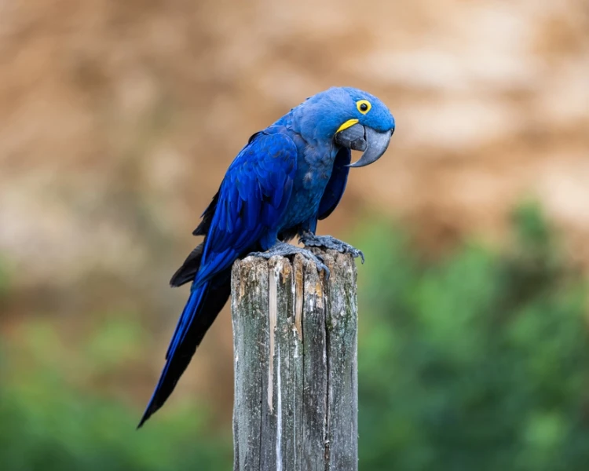
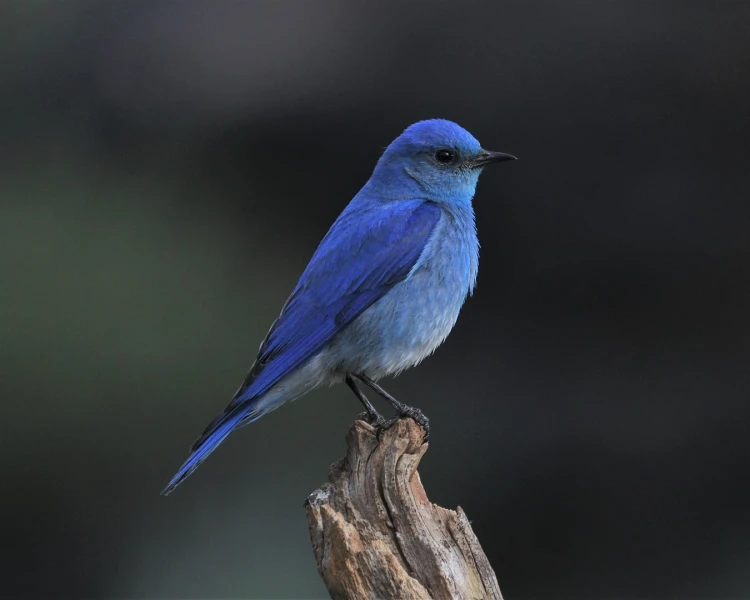

Hyacinth Macaw
This bright blue South American parrot is the largest macaw and the largest flying parrot species. With a length from the top of its head to the tip of its long pointed tail of about one meter, the Hyacinth macaw is longer than any other species of parrot. These adorable macaws have very strong beaks for eating the kernels of hard nuts and seeds. Their strong beaks are even able to crack coconuts, the large brazil nut pods, and macadamia nuts.

Mountain Bluebird
The males and the females of these small birds differ in coloration. Adult males have bright turquoise-blue plumage, while adult females have duller blue wings and tails, grey breasts, grey crowns, throats, and backs. However, in fresh fall plumage, the female's throat and breast are tinged with red-orange contrasting with white tail underparts. Mountain bluebirds feed mainly on insects; however, during cold winter months, they eat mostly